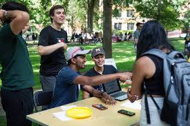
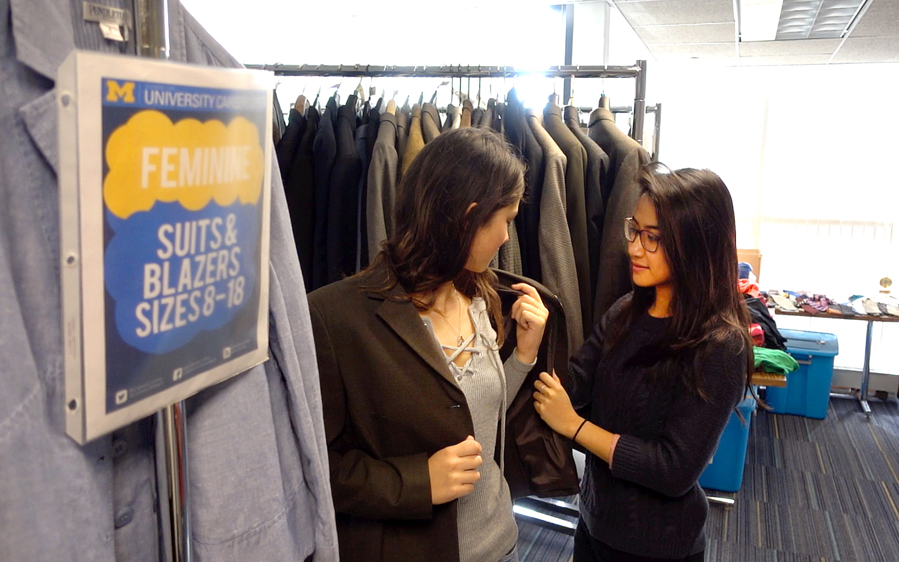
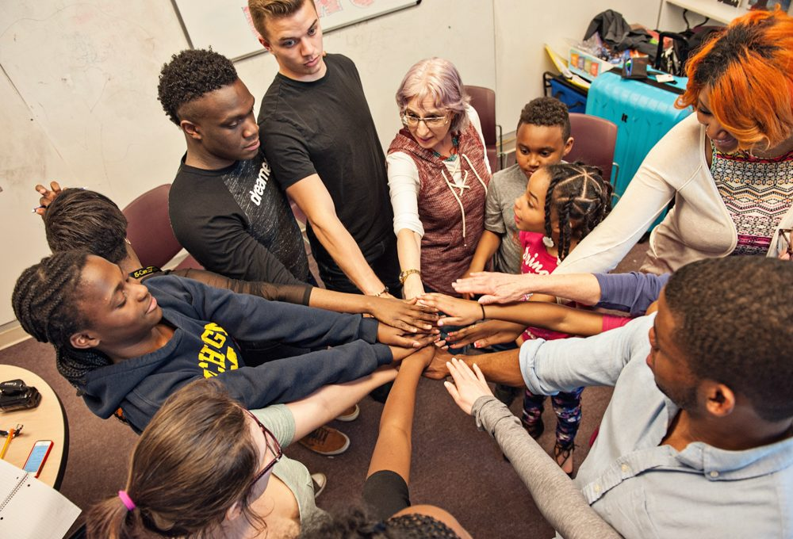
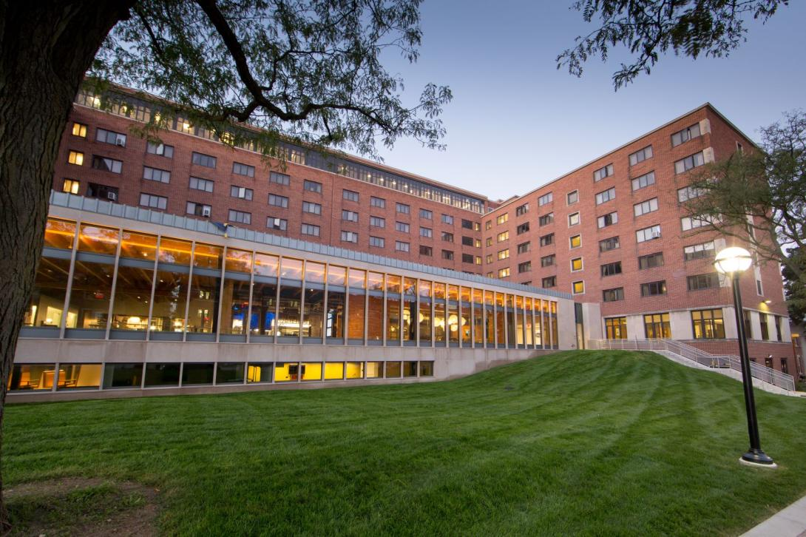

Staying on top of your academics is crucial to thriving at the University of Michigan. The university offers a wealth of resources to support your academic journey:
Academic Advising
Connect with academic advisors who can guide you through class registration, course planning, and major selection. Each of U-M's 19 schools and colleges offers tailored advising to help you meet your academic and career goals.Learn more
Study Spots
Discover a variety of study environments on campus, from quiet library corners to collaborative group spaces and neurodivergent-friendly areas. Many study spots are available on a first-come, first-served basis, and some even allow reservations.Learn more
Physical Health
Keeping your body healthy is essential for success. The University of Michigan offers numerous resources to help you stay in top physical condition:
University Health Service (UHS)
University Health Services Building
Access comprehensive medical care, including routine check-ups, vaccinations, and specialist referrals.Learn more
Recreational Sports
UMSI out in the fall!
Participate in various fitness programs, sports clubs, and use of gym facilities to stay active and healthy.Learn more
Mental Health
Maintaining your mental well-being is crucial for thriving in graduate school. Here are resources to support your mental health:
Counseling and Psychological Services (CAPS):
Access individual counseling, group therapy, workshops, and crisis intervention services.Learn more
Wellness Coaching:
Work with a wellness coach to develop strategies for managing stress, time, and overall well-being. Learn more
Mindfulness Resources:
Participate in mindfulness and meditation sessions to cultivate a calm and focused mind.Learn more
Support Groups:
Join peer support groups for shared experiences and collective coping strategies.Learn more
Life Outside the Classroom
Graduate school is more than just academics. It's important to cultivate a balanced life. Here are some resources to help you enjoy life outside the classroom:
Student Organizations

Festifall!
Join one of the many student organizations to connect with peers who share your interests and passions.Learn more
Arts and Culture
University of Michigan Museum of Art
Explore UM's vibrant arts scene with events, exhibitions, and performances happening year-round.Learn more
Career Services

Utilize career counseling, job search resources, and networking opportunities to prepare for your professional future.Learn more
Community Engagement

Get involved with local volunteering opportunities and community service projects to make a positive impact.Learn more
Housing and Dining

West Quad
Find information on on-campus housing options and dining services to ensure a comfortable living experience.Learn more